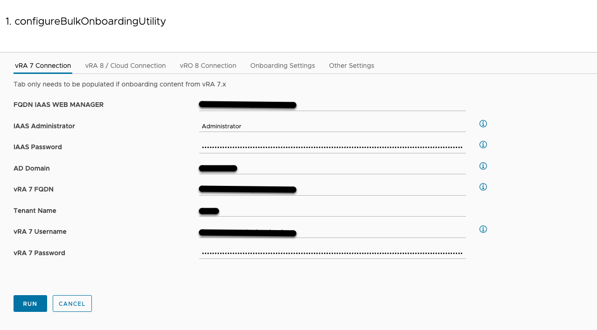
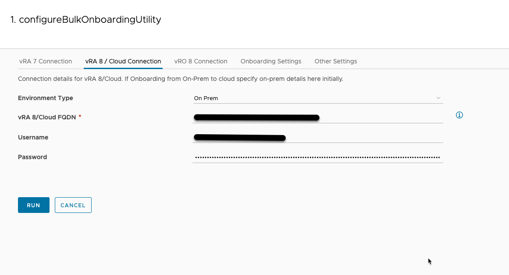
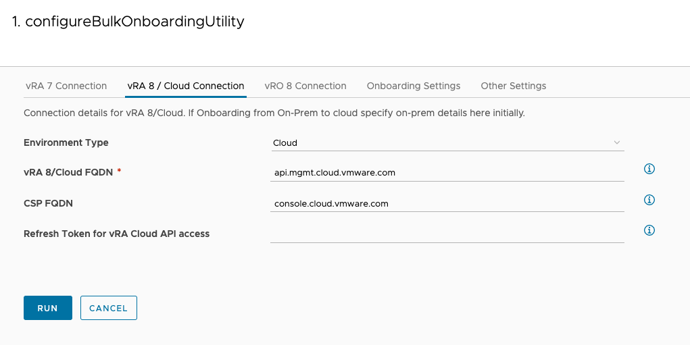
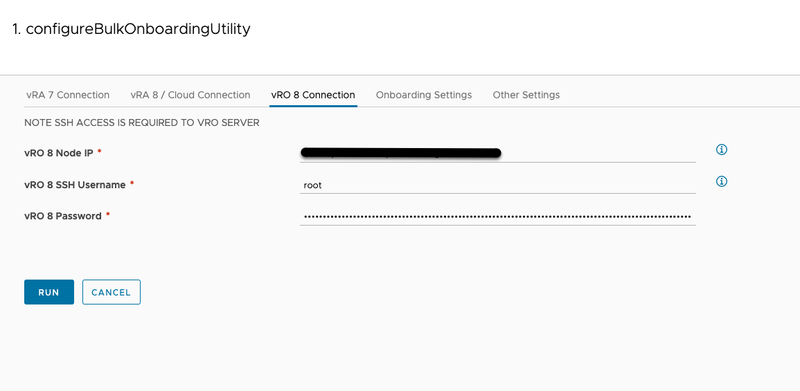
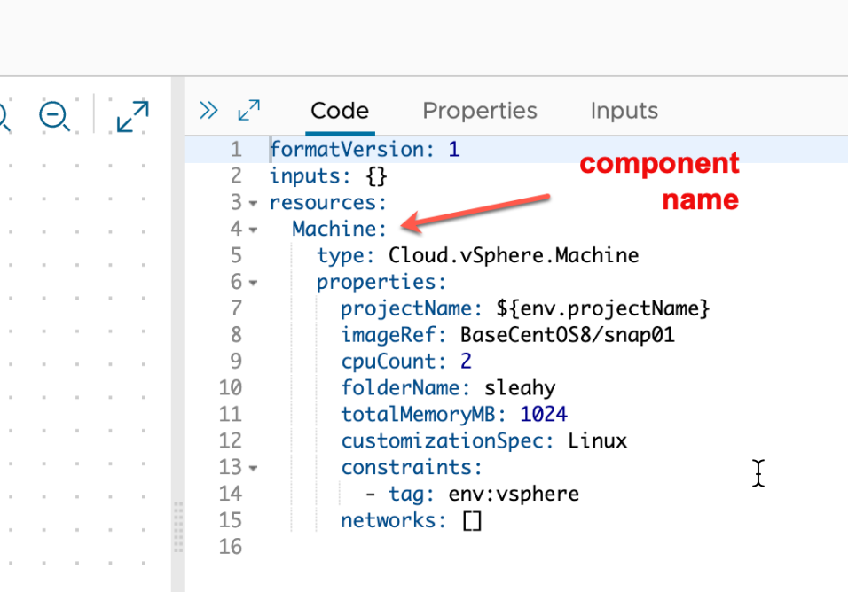
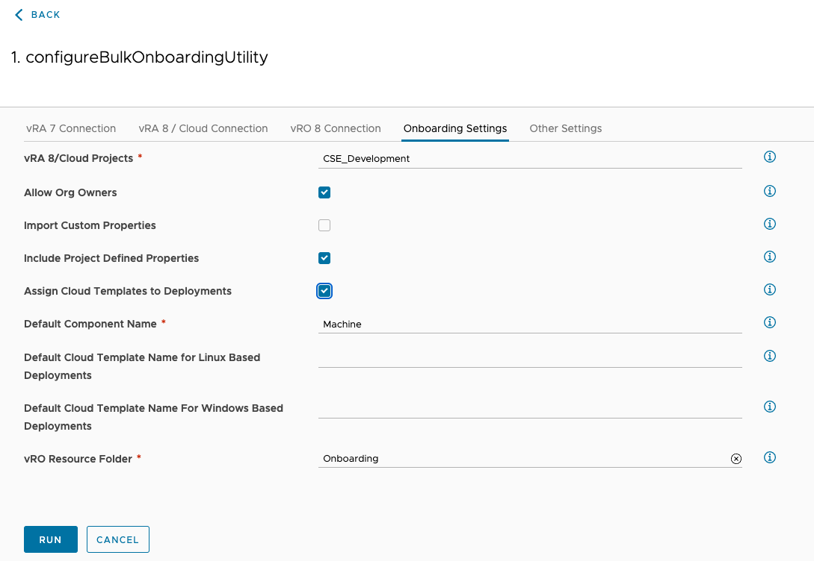
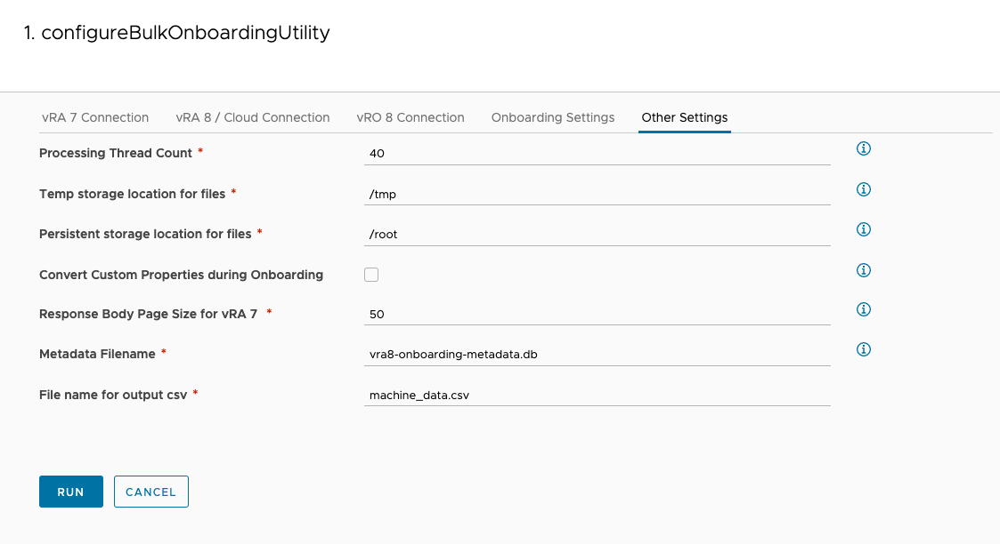
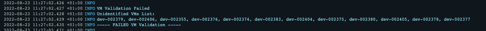

Explore the universe of IT automation, coding, and virtualization
Onboarding is a great way to get already deployed workloads into Aria Automation 8/Cloud for management. In addition to the UI based approach we have created a set of vRO workflows, since onboarding can be very time consuming to configure all that information in an onboarding plan. vRA 7 content in particular can have a large amount of custom properties that are great to import into Aria Automation 8/Cloud where possible. To address the time consuming approach of the UI for onboarding we have developed a set of vRO workflows to help speed up and scale up the process. At a high level the workflows will perform the following process at scale.
Fully detailed steps are provided in the README that is included in the vRO package under resources. Make sure to read the README before running the workflows.
The first workflow we will look at in more detail is designed to export all deployment and machine data from vRA 7. The vRA 7 export is tenant specific so you will need to complete the full export and onboarding process end to end per vRA 7 tenant. The onboarding process is limited to virtual machines and the current version of the workflows are limited to vSphere base virtual machines. Custom resources and other components in the vRA 7 deployment will be ignored and will not be present in Aria Automation 8. Also note there will be no changes made to the VMs or any other resources during the running of the workflows. The workflows need to be run on vRO 8.8 and above.
In order to run any of the data capture, validation or onboarding workflows we first need to run the configureBulkOnboardingUtility workflow. This workflow will gather all the required inputs for the entire onboarding process.
Lets walkthrough each tab to better understand the inputs. The first tab in the configureBulkOnboardingUtility workflow is for 7.x data export, the workflows need to connect to both the IAAS component and the vRA 7 appliance ( portal ). The IAAS administrator needs to have access to the IAAS repository and the username should be specified without any domain prefix or suffix. The domain should be specified on the AD Domain line. The vRA 7 Username needs to be a fabric and tenant administrator.

The next tab relates to the connection details for vRA 8 on-prem or vRA 8 Cloud. If your use case is vRA 8 to vRA Cloud you will need to initially specify the vRA 8 details on this tab for data capture. Once data capture is completed we can run this workflow again to specify the vRA cloud details.
On-Prem

The refresh token should be populated with your refresh token for your vRA Cloud Org. Details on how to generate the token can be found here. https://docs.vmware.com/en/VMware-Cloud-services/services/Using-VMware-Cloud-Services/GUID-E2A3B1C1-E9AD-4B00-A6B6-88D31FCDDF7C.html
Cloud

The vRO 8 connection tab is to provide the connection details for a specific vRO node. The user provided needs to have ssh access to the vRO node and access to the file system. This is required to provide a location to store metadata gathered from the provided source environment. It is recommended to use the root user to avoid any unexpected access issues. If required another user can be used with ssh access via password and file system read and write access. If you specify a user other than root you will also need to specify a folder path on the Other Settings tab that the user has read/write access to.

The onboarding settings tab specified details related to how the onboarding will be processed and what type of metadata is to be included or added during the onboarding process.
vRA 8/Cloud Projects
Comma separated list of vRA 8 projects to be processed for both validation and onboarding. The value can be set to one or more projects and allows the onboarding process to be completed in batches of one or more vRA 8 projects
Allow Org Owners
Specifies if Org Owners can be permitted to own deployments and ignore user project configuration
Import Custom Properties
Specifies if custom properties extracted from the source environment are to be included with the resource/deployment onboarding.
Include Project Defined Properties
Specifies if custom properties defined on the vRA 8 Project associated with an onboarded deployment should be added to the onboarded resource
Assign Cloud Templates to Deployments
Specifies if cloud templates should be assigned to the onboarded deployments. Default cloud templates can be specified on this tab and specific cloud templates can be specified during the data review process.
Default Component Name
This is the component name that is associated with the resource definition in the cloud template. The default one will be used in the event that Cloud Templates are not being assigned or we are unable to extract the component name from the cloud template specified for a particular deployment.

Default Cloud Template Name for Linux Based Deployments
Default cloud template that will be used for Linux based OS deployments if no specific cloud template is provided during the data review process
Default Cloud Template Name For Windows Based Deployments
Default cloud template that will be used for Windows based OS deployments if no specific cloud template is provided during the data review process
vRO Resource Folder
vRO Resource folder to be used for storing extracted data in csv format and log files related to workflow runs.

The other setting tab relates mostly to backend functionality and the settings do not need to be modified unless you are address a specific issue or configuration change.

Once this workflow completes successfully all the supplied inputs will be stored securely in a vRO configuration element to be used by the subsequent onboarding process.
The vRA 7x data capture workflow is ‘captureMachineDatavRA7x’, this workflow once run successfully will create a csv based list of all deployments in the vRA 7x environment. A second csv file will be created with a list of custom property names. Both files can be found in the resource elements folder specified in the Onboarding Settings tab of the configureBulkOnboardingUtility workflow.
All subsequent runs of the captureMachineDatavRA7x workflow should be run with the Delta Mode check box ticked. In some cases it can take some time to review and populate the csv file so the Delta Mode is to capture any new deployments in vRA 7 as it is still a running production environment.
NOTE: IF captureMachineDatavRA7x workflow is RUN WITHOUT CHECKING THE DELTA MODE CHECK BOX THE DATASET WILL BE DELETED AND YOU WILL NEED TO START THE ENTIRE PROCESS AGAIN FROM THE BEGINNING.
Similar to the 7x data capture workflow, the captureMachineDatavRA8 workflow is designed to capture all deployment and virtual machine data from vRA 8 instance. The main use case that this addresses is to move content between vRA 8 instances or move from on-prem to vRA Cloud. This workflow also has a dependency on successfully running the configureBulkOnboardingUtility workflow to supplied all required inputs.
Once run successfully the workflow will create a csv based list of all deployments in the vRA 8x environment. A second csv file will be created with a list of custom property names. Both files can be found in the resource elements folder specified in the Onboarding Settings tab of the configureBulkOnboardingUtility workflow. If you have multiple tenants in vRA 8 you will need to complete the entire process end to end for each tenant.
NOTE: Once data capture is completed for source vRA 8 environment you will need to run the configureBulkOnboardingUtility workflow again to specify the target vRA 8 or Cloud environment details. The target details should be specified on the vRA 8 / Cloud Connection tab.
The captureDiscoveredMachineDatavRA8 is designed to export all vSphere virtual machines that have been discovered in vRA 8 / Cloud. captureDiscoveredMachineDatavRA8 workflow has the same dependencies as the other workflows discussed where you need to run configureBulkOnboardingUtility workflow to configure all the required input to complete the data capture. Once run successfully the workflow will create a csv based list of all deployments in the vRA 8x environment.
NOTE: all of the above data capture workflows along with the validation workflow and onboarding workflow will create a detailed log file corresponding to the name of the workflow that you are running. The log files are located in the resource elements folder specified in the Onboarding Settings tab of the configureBulkOnboardingUtility workflow. Each run of a workflow will overwrite the previous log file for the corresponding workflow.
There are 2 x CSV files that can be reviewed and updated, machine_data_< DATE TIME STAMP >.csv ( names may differ depending on onboarding.ini settings ) and machine_data_< DATE TIME STAMP >_custom_properties.csv
machine_data csv file contains all the data relating to the machines found in vRA 7 and their corresponding deployment information. You can modify a selection of the columns in this file to further customise the configuration of each machine/deployment onboarded into vRA 8 / Cloud. All supported changes to file are optional and are not required to complete the onboarding process.
– The import column can be modified to omit a machine from the onboarding process, set the value to no and the machine will be skipped during onboarding.
NOTE: If import column is set to NO the machine is completely removed from the onboarding process during the validation run. In order to include any machines marked with NO at a later stage you will need to run a full data collection again. Running the workflow metadataDump will create an updated csv file that reflects what is currently in the backend metadata database.
– The newOwner column can be updated with the desired owner of the deployment/machine in vRA 8. This column can be left blank and the existing owner in vRA 7 will be assumed as the owner in vRA 8.
– The project column can be updated with the desired target project for the deployment/machine in vRA 8. This column can be left blank and the Business Group name in vRA 7 will be assumed as the project name in vRA 8. You will need to have a corresponding project created in vRA 8. The onboarding workflows do not create/configure any projects in vRA 8.
– The endpointFQDN column can be updated with the FQDN that is configured on the corresponding cloud account in vRA 8. This is optional and is only required for a particular set of use cases where the fqdn in 7 does not match the fqdn in vRA 8. If you are specifying a VCF workload domain you need to specify the workload vCenter FQDN in this column.
– The cloudTemplateName column can be updated with a specific cloud template to be associated with each deployment. If this column is left blank the defaults specified in the onboarding.ini file will be used. If you do not want to associate cloud templates this can also be specified in the onboarding.ini file If you have multiple resources in your cloud template you can further specify which resource to map the machine to with notation like so myCloudTemplate:0 or myCloudTemplate:1 where 0 would map to the first vSphere machine or cloud machine defined in the cloud template and 1 would map to the second vSphere machine or cloud machine on the specified cloud template.
As touched on above the onboarding workflows do not create any of the vRA 8 infrastructure and the process assumes users, projects, cloud accounts and cloud templates are all created and configured in vRA 8 ahead of time. The validation workflow will highlight any missing configuration in vRA that was specified in the updated csv file.
machine_data_custom_properties file stores a unique list of all custom properties extracted from vRA 7. Modifying this file will allow you to remove custom properties from the import process or change the property name as it will appear in vRA 8. To remove the custom property from the process you just need to delete the corresponding entry from the file. To have the name changed on import to vRA 8 you can specify the new name in newPropertyName column. Property names cannot have spaces.
TIPS & TRICKS: If you want to clean up the exported csv file and remove any machines that you do not want to onboard you can do the following. Mark the import column in the csv file with no for all machine you want omitted from the onboarding process. Run the validateOnboardingCSV workflow with the updated machine_data csv file and once completed, the result of the workflow run can be ignored. Now run the metadataDump workflow in the helper folder. This workflow will create a new csv file called metadata_dump_< DATE TIME STAMP > .csv this file will now only contain machines / deployments that were marked as yes in the import column and this file can now be reviewed and update and used when running future validation.
Once the csv files have been modified as required you can supply it as an input for the validateOnboardingCSV workflow. If you have specified to Import Custom Properties on the Onboarding Settings tab in the configureBulkOnboardingUtility workflow you will also need to supply the reviewed/updated machine_data_custom_properties csv file. The validation process will check that all projects exist in vRA 8 as specified in the csv file, all cloud accounts exist in vRA 8, all owners are valid users in vRA 8 and are members or administrators in the specified project along with checking the specified machine is visible in vRA 8 and not already associated with a project. The output in the vro log section is quite verbose for the validation process highlighting any issues, you can also find more details in the log file in the resource elements folder. Once the workflow is finished there is a summary printed at the end to highlight areas that failed validation. Validation can be run as often as required until all validation errors have been addressed.
There is a guide included that can provide some troubleshooting tips Troubleshooting_validation_error_for_bulk_onboarding.txt
Once your validation summary looks like this you are ready to begin creating onboarding plans.
In the case of an active vRA 7 x environment you might want to run the captureMachineDatavRA7x workflow with the Delta Mode check box checked to capture any new 7x deployments and include them in the onboarding process.
NOTE: If validation fails due to missing VMs in vCenter you can remove the VMs from the dataset by checking the Delete Delta VM and specifying a comma separated list of VMs to remove from the dataset. In the output of a failed validation you should be able to copy a list of VM names that caused the validation failure in the Unidentified VMs List. See screenshot below.

TIPS & TRICKS: If you are onboarding a very large number of deployments and you want to complete validation and onboarding one or two project at a time you can proceed with onboarding of the desired project/s if you are happy that any validation failures highlighted by the validateOnboardingCSV workflow are not related to the desired project/s
Once validation is completed successfully ( or for your desired project/s ) and you have walked through all the steps with the deltas if required ( either to remove machines from the process or add net new 7.x deployments) we are ready to begin the onboarding. The onboarding workflow groups machines and deployments at the project level. Projects will processed one at a time based on the projects specified in the configureBulkOnboardingUtility workflow or as an input for the onboarding workflow onboardMachines ( can be a list of 1 or more projects ). To allow for both granular control and batch processing you can run the onboardMachines workflow multiple times and only change the projects field in the input to process one or more project/s at a time. Which ever option best fits your use case.
To begin the onboarding you need to run the onboardMachines workflow. The onboardMachine workflow can be run in a dry run mode by leaving the Run Onboarding Plans check box unchecked. This basically provides a dry run feature where you can review the generated plans in the UI to ensure they contain all the data you expect to be onboarded. Once you are happy with the generate onboarding plan review you should run the onboardMachines workflow again and this time you should check the Run Onboarding Plans check box. The onboardMachines workflow will run through the validation process again for each group of machines/deployments related to the project currently being processed. Any failures in validation at this point will cause the onboarding of the current project to fail and the workflow will continue onto the next project. Once the script finishes you should see all the onboarded deployments appear in vRA 8. Depending on the scale of the onboarding it may take some time, we generate 1 onboarding plan per project so the following is the expected performance.
Once the deployments have been onboarded and the owner assignment is correct in vRA 8 for all onboarded deployments you can go ahead and run the post onboarding workflow.
The post onboarding workflow postOnboardingOperations currently supports the following operations.
If selected this operation will assign any lease data available in the data captured from the source to the newly onboarded deployments at the target.
If enabled when running the configuration workflow at the start of the process and again when running the postOnboardingOperations workflow historical requests relating to each deployment will be populated in vRA 8. The requests are limited to the last 50 operation on a deployment. The requests will be displayed in the correct chronological order on the deployment but the timestamp on requests listed on the left of the history screen will be incorrect. The data relating to the request when selected from the request list will be correct and align to the data for the request in vRA 7. Inputs and the results of the operation are also displayed correctly.
If selected and cloud templates were assigned to the deployments as part of the onboarding the icon configured on the Cloud Template will be configure on all corresponding deployments that were onboarded.
If selected a JSON based text file will be created and saved in the resources elements folder in vRO. This file can in turn be read by any custom workflow to identify all deployments and machines that were onboarded during an onboarding run.